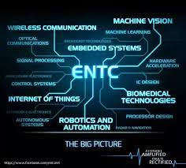
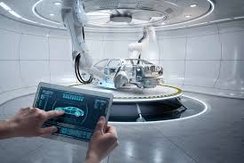

Welcome to Engineering Stream Assistant
Our platform helps students and engineers determine which engineering stream is best suited for them based on their skills and interests.
Get StartedStreams

Computer Science
Computer science is the study of computers and computational systems which includes everything from the algorithms that make up software to how software interacts with hardware to how well software is developed and designed. - 
Electronics & Telecommunication
Electronics and telecommunications engineering is a modern engineering discipline that deals with designing, fabricating, producing, testing and supervising the manufacturing process of complex electronic products and systems. - 
Mechanical
Mechanical engineering is the study of physical machines that may involve force and movement. It is an engineering branch that combines engineering physics and mathematics principles with materials science, to design, analyze, manufacture, and maintain mechanical systems.
"Empower yourself with Engineering Stream Assistant to create lifelong career success in the field of engineering"